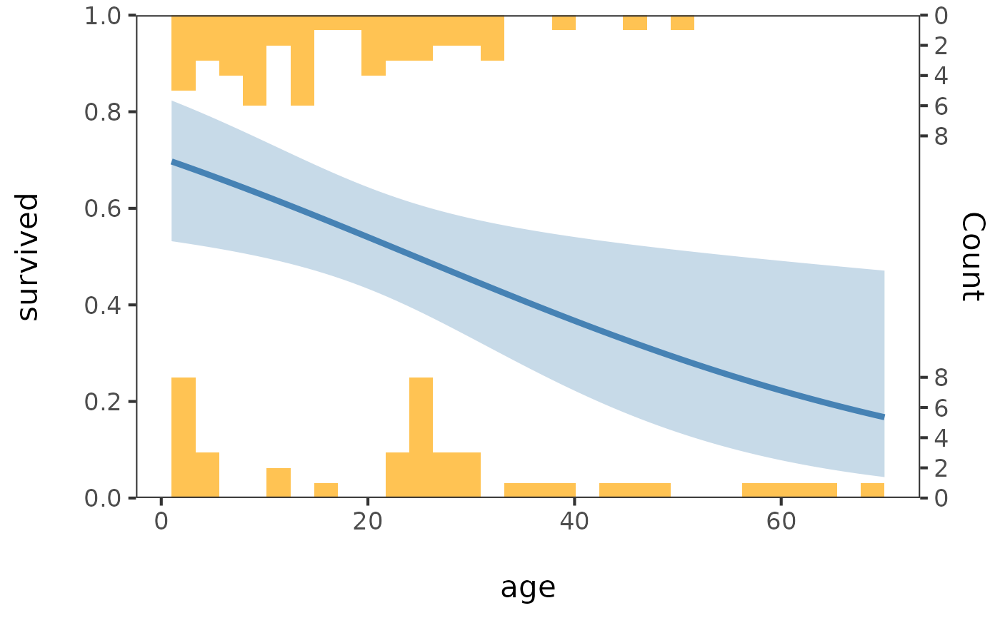
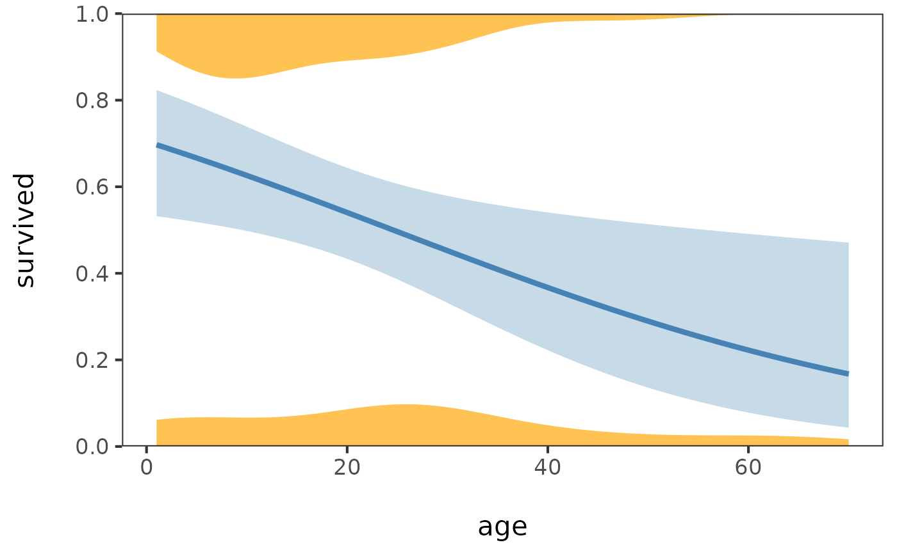
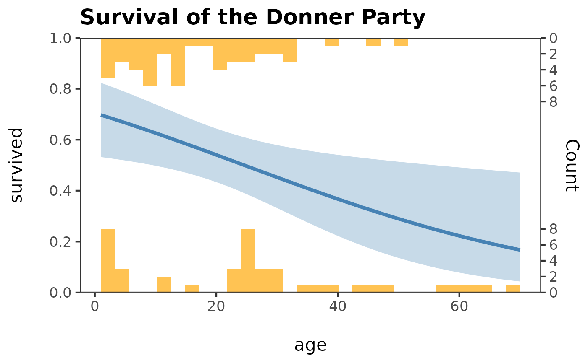
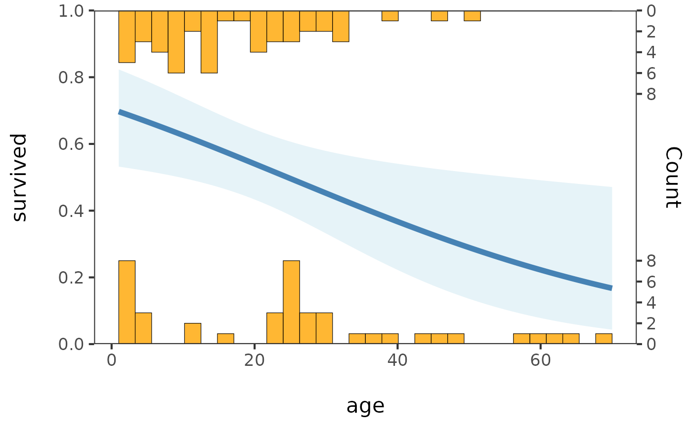
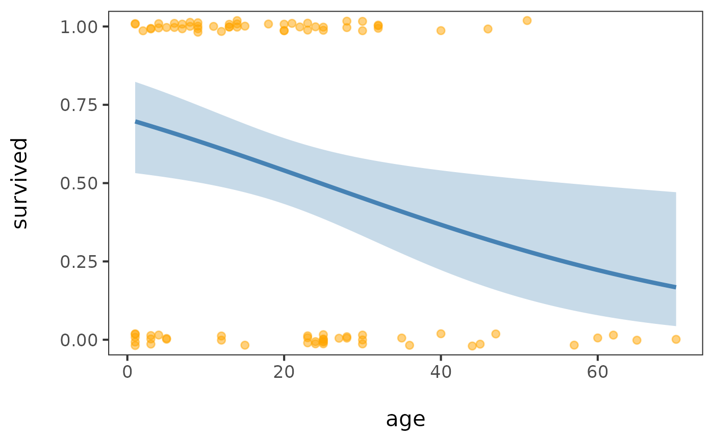
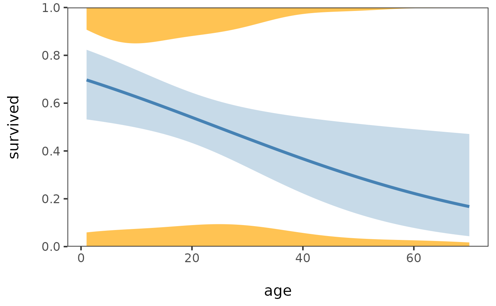
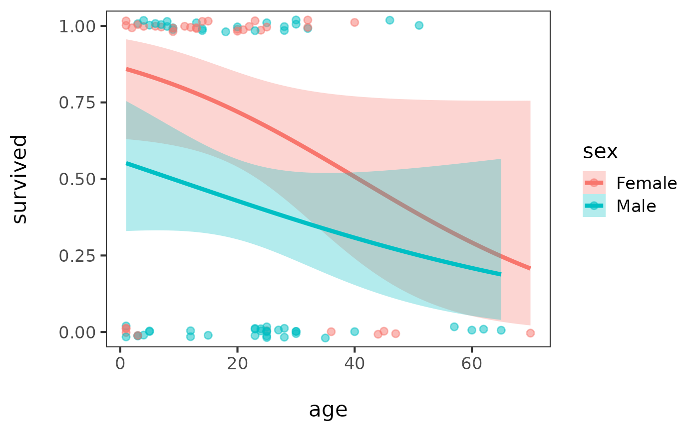
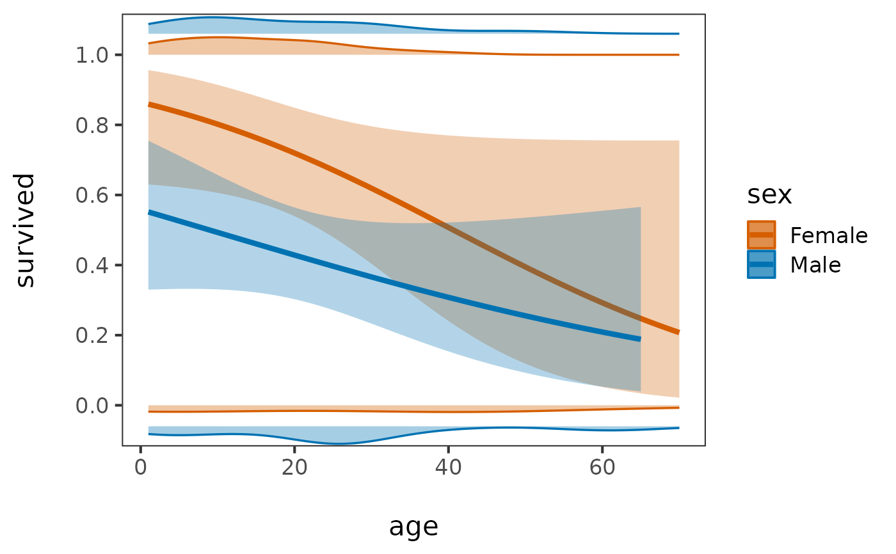

Plot a fitted logistic regression with marginal distributions of the predictor
Source:R/logist_plot.R
logist_plot.RdPlots predicted probabilities from a glm(y ~ x, family = binomial) fit for a single
quantitative predictor x and binary response y, and also with the smoothed
logistic fit and its confidence band.
What this plot method adds is a representation of
the marginal distribution of x within each y group – mirrored histograms or filled
density estimates above and below the curve, or jittered points – as suggested by Smart et
al. (2004). These help you
see where the data supporting the fit exist; e.g., where the data are "thin", so the confidence band is wide.
Usage
logist_plot(x, ...)
# Default S3 method
logist_plot(
x,
y,
marginal = c("hist", "points", "density"),
bins = 30,
adjust = 1,
xlab = NULL,
ylab = NULL,
fit.color = "steelblue",
marginal.color = "orange",
fit.args = list(),
marginal.args = list(),
group = NULL,
group.colors = NULL,
marginal.height = NULL,
...
)
# S3 method for class 'data.frame'
logist_plot(
x,
xvar = 1L,
yvar = 2L,
marginal = c("hist", "points", "density"),
bins = 30,
adjust = 1,
xlab = NULL,
ylab = NULL,
fit.color = "steelblue",
marginal.color = "orange",
fit.args = list(),
marginal.args = list(),
group = NULL,
group.colors = NULL,
marginal.height = NULL,
...
)
# S3 method for class 'formula'
logist_plot(
formula,
data,
marginal = c("hist", "points", "density"),
bins = 30,
adjust = 1,
xlab = NULL,
ylab = NULL,
fit.color = "steelblue",
marginal.color = "orange",
fit.args = list(),
marginal.args = list(),
group = NULL,
group.colors = NULL,
marginal.height = NULL,
...
)
logist_hist(...)
logist_point(...)
logist_density(...)Arguments
- x
a numeric predictor vector or a data frame; see
formulabelow for the model-formula interface- ...
arguments passed to methods, or on to
logist_plot()from the convenience wrappers. Arguments not consumed by the selected method are an error rather than being silently ignored. Usefit.argsandmarginal.argsfor layer customization.- y
a binary (0/1, or 2-level factor/character/logical) response vector
- marginal
character string, how to represent the marginal distribution of
xwithin eachygroup:"hist", mirrored histograms (default);"points", jittered points; or"density", mirrored filled density estimates- bins
number of histogram bins, for
marginal = "hist"; default: 30- adjust
positive numeric bandwidth adjustment passed to
stats::density()formarginal = "density"; default: 1- xlab, ylab
axis labels; default to the deparsed
x/yexpressions- fit.color
color of the fitted logistic curve and its confidence band; default: "steelblue". This scalar is inactive when
groupis supplied; usegroup.colorsinstead.- marginal.color
color of the marginal representation of
xwithin eachygroup (histogram/density fill, or point color formarginal = "points"); default: "orange" This scalar is inactive whengroupis supplied; usegroup.colorsinstead.- fit.args
named list of graphical arguments for the fitted curve and confidence band. Values override the defaults established by
fit.color. The fit remains a binomial GLM, sodata,mapping,stat,position,inherit.aes,method,formula, andmethod.argscannot be replaced. In grouped mode,colourandfillmust instead be controlled throughgroup.colors.- marginal.args
named list of graphical arguments for the active marginal layer. Values override the defaults established by
marginal.color. Valid arguments depend onmarginal: point aesthetics andpositionfor"points", rectangle aesthetics for"hist", or ribbon aesthetics for"density". Histogram computation remains controlled bybins; density bandwidth remains controlled byadjust; and marginal geometry height remains controlled bymarginal.height. In grouped mode,colourandfillmust instead be controlled throughgroup.colors.- group
optional grouping input. For the default method, a vector the same length as
xandy; for data-frame and formula methods, a single column name or position. Grouping is supported formarginal = "points"and"density", but not"hist".- group.colors
optional character vector of colours for grouped plots. An unnamed vector is applied in group-level order; a named vector must contain every observed group label. The same palette is used for fits, marginals, and the legend. The default
NULLuses ggplot2's discrete scales.- marginal.height
optional finite positive number controlling marginal height. For histograms and ungrouped densities, this is the maximum proportion of the fixed 0–1 probability panel occupied on each side; defaults are 0.25 and 0.15, respectively, and values cannot exceed 0.5. For grouped densities, it is the full height of each outward lane in the original probability-coordinate units; the default is 0.05 and values cannot exceed 1.
NULLselects the applicable default. Formarginal = "points", a non-NULLvalue is ignored with a warning; control vertical jitter throughmarginal.argsinstead.- xvar, yvar
which columns of
xto use as predictor/response – column name or position; default to the first two columns (matches the original 2-column-data-frame calling convention)- formula
a model formula,
y ~ x– exactly one response and one predictor;formulamethod only. The first argument may be passed positionally or asformula = y ~ x(matching base R'sboxplot()/lm()convention) – unlike the other methods, it is not namedx- data
a data frame –
formulamethod only
Details
logist_plot() is generic, with methods for a pair of vectors, a data frame, or a
model formula. logist_hist(), logist_point(), and logist_density() are convenience
wrappers with marginal= fixed to "hist"/"points"/"density", but otherwise accept
the same x/... as logist_plot() – i.e., they also work with a data frame or a formula.
An optional group produces separate fits and colour identities in point and density
modes. Grouped histograms are deliberately unsupported because stacked or overlapping
mirrored bars obscure both the distributions and the fitted curves.
Grouped density lanes begin at 0 and 1 and stack outward in fixed, narrow bands. Each
group's two response-specific densities are normalized together within that band, so the
shapes show conditional distributions but do not encode group sample sizes.
bins, adjust, and marginal.height control computation of the marginal geometry;
they are not graphical layer arguments and therefore belong at the top level rather than
inside marginal.args.
When a small histogram height would crowd the secondary count axis, its integer ticks are
thinned symmetrically while retaining the correct count-to-height mapping.
All marginal modes return a native ggplot object. Standard additions such as
ggplot2::labs() and ggplot2::theme() can therefore be applied after construction.
Adding another scale_y_*() replaces the internally configured probability scale; in
histogram mode this can remove or invalidate the secondary count-axis mapping.
References
Smart, J. M. R., Sutherland, W. J., Watkinson, A. R., and Gill, J. A. (2004). A New Means of Presenting the Results of Logistic Regression, Bulletin of the Ecological Society of America, 85(3), 100–102. doi:10.1890/0012-9623(2004)85[100:ANMOPT]2.0.CO;2 https://esapubs.org/bulletin/backissues/085-3/bulletinjuly2004_2column.htm#tools1
See also
vcd::binreg_plot(), a similar plot using grid graphics directly.
Examples
data(Donner, package = "vcdExtra")
# three interfaces to the same underlying plot
logist_plot(Donner$age, Donner$survived, marginal = "points")
logist_plot(Donner[, c("age", "survived")], marginal = "hist")

logist_plot(survived ~ age, data = Donner, marginal = "density")

# post-hoc labels and themes work in histogram mode
logist_plot(survived ~ age, data = Donner, marginal = "hist") +
ggplot2::labs(title = "Survival of the Donner Party") +
ggplot2::theme(plot.title = ggplot2::element_text(face = "bold"))

# layer-specific customization; scoped lists override graphical defaults
logist_plot(
survived ~ age, data = Donner, marginal = "hist",
fit.args = list(linewidth = 2, fill = "lightblue"),
marginal.args = list(colour = "black", linewidth = 0.2, alpha = 0.8)
)

# convenience wrappers -- marginal= fixed, still get all calling conventions
logist_point(survived ~ age, data = Donner)

logist_hist(survived ~ age, data = Donner)
 logist_density(survived ~ age, data = Donner, adjust = 1.25)
logist_density(survived ~ age, data = Donner, adjust = 1.25)

# grouped fits and marginals; grouped density lanes extend outward from 0 and 1
logist_point(survived ~ age, data = Donner, group = "sex")

logist_density(
survived ~ age, data = Donner, group = "sex",
group.colors = c(Female = "#D55E00", Male = "#0072B2"),
marginal.args = list(alpha = 0.35, linewidth = 0.6)
)
